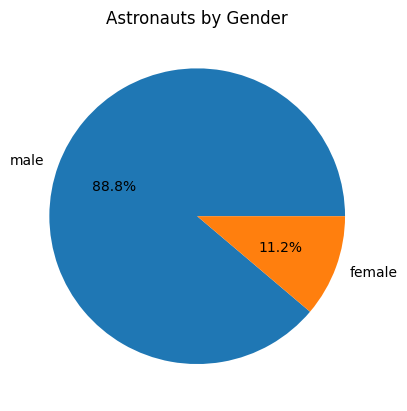
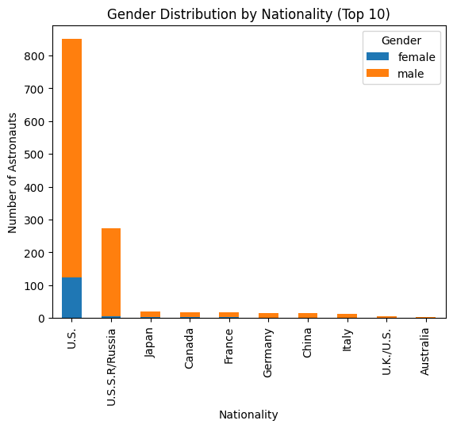
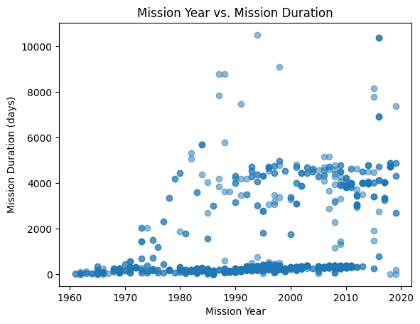
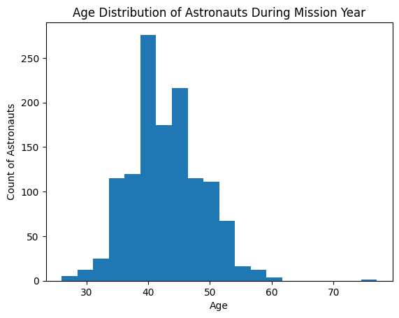
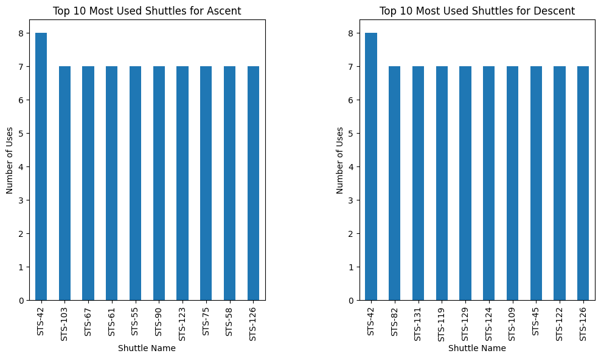
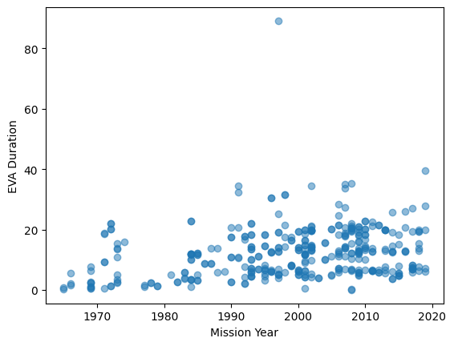

---
title: "Space: The Final Frontier?"
description: "Final Blog"
author: "Angel Coronado"
date: "03/19/2023"
date-modified: "03/19/2023"
---SyntaxError: invalid syntax (4013197900.py, line 1)---
title: "Space: The Final Frontier?"
description: "Final Blog"
author: "Angel Coronado"
date: "03/19/2023"
date-modified: "03/19/2023"
---SyntaxError: invalid syntax (4013197900.py, line 1)Space is the final frontier, inspiring awe and curiosity from humanity across the ages. Space exploration refers to the ongoing pursuit of discovering and understanding the vast expanse beyond our planet Earth. It encompasses a range of activities including launching and operating spacecraft, conducting scientific research, and developing technologies that allow us to explore deeper into the cosmos. From the first human journey into space by Yuri Gagarin in 1961 to the latest robotic missions to Mars and beyond, space exploration has captivated the imagination of people around the world and remains a vital aspect of our scientific and technological advancement. Through space exploration, we are able to gain a better understanding of our universe and our place within it. In this project, I will be exploring those that made the journey to the final frontier to gain more insight to the similarities that they share, what roles they played, and how these demographics varied across nations and time.
In this project, I answered the following questions:
What country has the most mission time?
What is the average year of age of astronauts during their mission?
How many astronauts had extravehicular activities (EVAs)? What is the average amount they spent doing EVAs?
What shuttles were used the most?
As stated previously, the dataset I used includes information such as each astronaut’s name, nationality, gender, birth date, etc. In this journal, I have used various analytical methods to explore and visualize the CORGIs dataset. These methods include creating pie charts to display categorical data, bar graphs to compare quantities, and histograms to show the distribution of numerical data. Stacked bar graphs have been used to show how multiple variables contribute to a single category, specifically how the genders of astronauts are distributed in their respective categories. Scatter plots have been used to show how two numerical variables may be related to each other and draw conclusions from said relation. Statistical measures such as the mean, median, mode, standard deviation, and trimmed mean have been used to describe numerical data. These methods have been used to gain insights into various aspects of the data, including mission details, astronaut demographics, and mission outcomes. All of these techniques were performed in Jupyter Notebook using Python.
After analyzing the data set, several statistics caught my attention. Firstly, it was revealed that all astronauts included in the dataset had a military background. Secondly, the statistics for the mission time were as follows: the mean mission time was 1052.02 days, the median was 261.00 days, the mode was 283.00 days, and the 10% trimmed mean was 675.58 days, indicating the presence of an outlier that significantly affected the mean. It was also found that there were few astronauts that performed extra-vehicular activities (EVAs), as the mean EVA time was 3.67 hours, the median was 0.00 hours, and the mode was 0.00. The 10% trimmed mean for EVA time was 1.93 hours, indicating that the presence of an outlier once again raised the mean significantly.
The code below shows the libraries and methods I utilized to answer these questions:
import pandas as pd
import numpy as np
import matplotlib.pyplot as plt
import scipy.stats as stats
import datetime as dtimport requests
from bs4 import BeautifulSoup
import pandas as pd
def pdcorgis(a):
dataset_name = a.lower()
dataset_name = dataset_name.replace(' ', '_')
data_url = f"https://corgis-edu.github.io/corgis/csv/{dataset_name}/"
response = requests.get(data_url)
soup = BeautifulSoup(response.content, "html.parser")
for i in soup.find_all("a"):
if i.has_attr("download"):
csv_file = i["href"]
break
csv_url = f"https://corgis-edu.github.io/corgis/csv/{dataset_name}/{csv_file}"
df = pd.read_csv(csv_url)
return df
astronauts_df = pdcorgis("Astronauts")# Calculate the number of astronauts by gender
gender_counts = astronauts_df['Profile.Gender'].value_counts()
# Create a pie chart showing the gender distribution
plt.pie(gender_counts.values, labels=gender_counts.index, autopct='%1.1f%%')
plt.title('Astronauts by Gender')
plt.show()
Here, we see an overwhelming majority of the astronauts are male.
# Create a pivot table to count the number of astronauts by nationality and gender
nationality_gender_counts = pd.pivot_table(astronauts_df, values='Profile.Name', index='Profile.Nationality', columns='Profile.Gender', aggfunc='count', fill_value=0)
# Get the top ten nationalities
top_nationalities = nationality_gender_counts.sum(axis=1).sort_values(ascending=False).head(10)
# Get the data for the top ten nationalities
top_nationality_data = nationality_gender_counts.loc[top_nationalities.index]
# Create a stacked bar chart showing the gender distribution by nationality
top_nationality_data.plot(kind='bar', stacked=True)
plt.title('Gender Distribution by Nationality (Top 10)')
plt.xlabel('Nationality')
plt.ylabel('Number of Astronauts')
plt.legend(title='Gender')
plt.show()

The USA has a clear lead when it comes to the number of astronauts that have been sent to space and have also been the country to send the most female astronauts to space.
# Group the data by country and calculate the total mission time
country_group = astronauts_df.groupby('Profile.Nationality')['Profile.Lifetime Statistics.Mission duration'].sum()
# Sort the data in descending order based on the total mission time
country_group = country_group.sort_values(ascending=False)
# Select the top ten countries
top_ten_countries = country_group.head(10)
# Create a bar graph
top_ten_countries.plot(kind='bar')
# Set x-axis label
plt.xlabel('Country')
# Set y-axis label
plt.ylabel('Total Mission Time (days)')
# Show the plot
plt.show()Russia/USSR has a decisive lead over the US in terms of time spent on mission in space, trailed by the US with the two leaving all other countries far behind.
# Convert birth year to datetime and calculate the age of the astronaut at the time of their mission
astronauts_df['Mission.Year'] = pd.to_datetime(astronauts_df['Mission.Year'], format='%Y')
astronauts_df['Profile.Birth Year'] = pd.to_datetime(astronauts_df['Profile.Birth Year'], format='%Y')
astronauts_df['age_at_mission'] = ((astronauts_df['Mission.Year'] - astronauts_df['Profile.Birth Year']).dt.days / 365).astype(int)
# Create a histogram showing the distribution of astronaut ages during their mission year
plt.hist(astronauts_df['age_at_mission'], bins=20)
plt.title('Age Distribution of Astronauts During Mission Year')
plt.xlabel('Age')
plt.ylabel('Count of Astronauts')
plt.show()In the histogram, we see the ages of astronauts at the time of their mission. There is a peak at both 40 and 45 and very few that are in their 30s, the range I originally expected.
# Create a scatter plot of mission year against mission duration
plt.scatter(astronauts_df['Mission.Year'], astronauts_df['Mission.Durations.Mission duration'],alpha=0.5)
# Set the x-axis label
plt.xlabel('Mission Year')
# Set the y-axis label
plt.ylabel('Mission Duration (days)')
# Set the title of the plot
plt.title('Mission Year vs. Mission Duration')
# Display the plot
plt.show()
As technology progresses, as does the length of the mission, while not a significant jump on the lower end there is a clear trend upwards and there are higher mission durations that wre not possible before 1970.
# Get the top ten most used shuttles for ascent and descent
top_shuttles_ascent = astronauts_df['Mission.Vechicles.Ascent'].value_counts().head(10)
top_shuttles_descent = astronauts_df['Mission.Vechicles.Decent'].value_counts().head(10)
# Create a figure with two subplots
fig, (ax1, ax2) = plt.subplots(1, 2, figsize=(12, 6))
# Plot the top ten most used shuttles for ascent in the first subplot
top_shuttles_ascent.plot(kind='bar', ax=ax1)
ax1.set_xlabel('Shuttle Name')
ax1.set_ylabel('Number of Uses')
ax1.set_title('Top 10 Most Used Shuttles for Ascent')
# Plot the top ten most used shuttles for descent in the second subplot
top_shuttles_descent.plot(kind='bar', ax=ax2)
ax2.set_xlabel('Shuttle Name')
ax2.set_ylabel('Number of Uses')
ax2.set_title('Top 10 Most Used Shuttles for Descent')
# Adjust the spacing between the subplots
plt.subplots_adjust(wspace=0.4)
# Display the plot
plt.show()
Here, the most used shuttles for both ascent and descent are shown. STS-42 is the most used shuttle, being used the most for ascensions and descensions.
# Count the number of astronauts in each selection group
selection_counts = astronauts_df['Profile.Selection.Group'].value_counts()
# Select the top 10 selection groups
top_10_selection_counts = selection_counts[:10]
# Plot the top 10 selection groups in a bar graph
plt.figure(figsize=(12, 6))
plt.bar(top_10_selection_counts.index, top_10_selection_counts.values)
plt.xlabel('Selection Group')
plt.ylabel('Number of Astronauts')
plt.title('Top 10 Selection Groups with the Most Astronauts')
# Display the plot
plt.show()
These selection groups are the way that NASA goes about graduating astronauts through their training, with NASA-16 having the most and graduating in 1996.
astronauts_df['Mission.Role'] = astronauts_df['Mission.Role'].str.lower()
# Group by mission role and calculate mean EVA duration
role_eva = astronauts_df.groupby('Mission.Role')['Mission.Durations.EVA duration'].mean()
# Sort values in descending order
role_eva = role_eva.sort_values(ascending=False)
# Create bar plot
plt.bar(role_eva.index, role_eva.values)
# Set title and labels
plt.title('Average EVA Duration by Mission Role')
plt.xlabel('Mission Role')
plt.ylabel('EVA Duration (hours)')
# Rotate x-tick labels by 90 degrees
plt.xticks(rotation=90)
# Display plot
plt.show()
Unsurprisingly, we see that the flight engineer role has the most average EVA time and that there are a majority of roles that do not ever have any EVA time.
# Select only rows where EVA duration is greater than 0
df = astronauts_df.query("`Mission.Durations.EVA duration` > 0")
# Create scatter plot
plt.scatter(df['Mission.Year'], df['Mission.Durations.EVA duration'],alpha=0.5)
# Set x-axis label
plt.xlabel('Mission Year')
# Set y-axis label
plt.ylabel('EVA Duration')
# Show the plot
plt.show()
Here we see a trend of more EVA time as technology advances. However we do see an outlier around 1995 that skews the data. (NOTE: This scatter plot excludes EVA counts of 0)
Throughout this analysis of the astronaut data, several key questions were answered. It was found that despite not having the most astronauts sent to space, the USSR/Russia had a significantly higher amount of time spent on mission. Additionally, a histogram of astronaut ages during their missions showed that the average age was around 40 years old, slightly higher than the current average age, 34. Examining the amount of time spent on EVAs, it was found that the average was 3.67 hours, with flight engineers having the most EVA time out of all roles. These extravehicular activities could range from reconfiguring cooling loops on laboratory modules to securing radiators on the outside of a spacecraft. Finally, the analysis found that the most used shuttle for both ascent and descent was the STS-42, which was used eight times. The STS-42 was iconic, taking a crew of eight astronauts on both ascent and descent with members from the United States, Canada, and Germany, one of whom was Canada’s first female astronaut. These findings help provide insight into the history of space exploration and the roles played by various countries, shuttles, and astronaut roles in space missions.
Further analysis revealed that only 11.2 percent of all astronauts were female. Despite this, the United States had the largest number of female astronauts, indicating a greater push for inclusivity and diversity in space exploration. Among the different mission roles, mission specialists had the highest number of females, while commanders had the fewest. This suggests that there may be a gender bias in certain roles and highlights the importance of promoting gender equality in the field of space exploration.
When I initially selected this dataset, I had done so with the intention of trying to see trends in the advancement of space technology as time progressed, spurred on by the fact that there has not been a manned mission to the moon since the Apollo 17 mission on the 19th of December in 1972. However, upon further analysis the disparity of space access by both gender and nationality was much more prominent and pointed. While recent classes of astronauts that NASA has graduated have done better to counteract this disparity by having more even numbers of male and female astronauts, much work remains in breaking through this final frontier.
In conclusion, although drastic improvement is space technology over the past decades have allowed for the United States to take a prominent role in space exploration, we must also take an active role in allowing others equal access to this domain. The benefits of more groups bringing new ideas to space research and technology cannot be overstated and is key to the future endeavors of humanity.